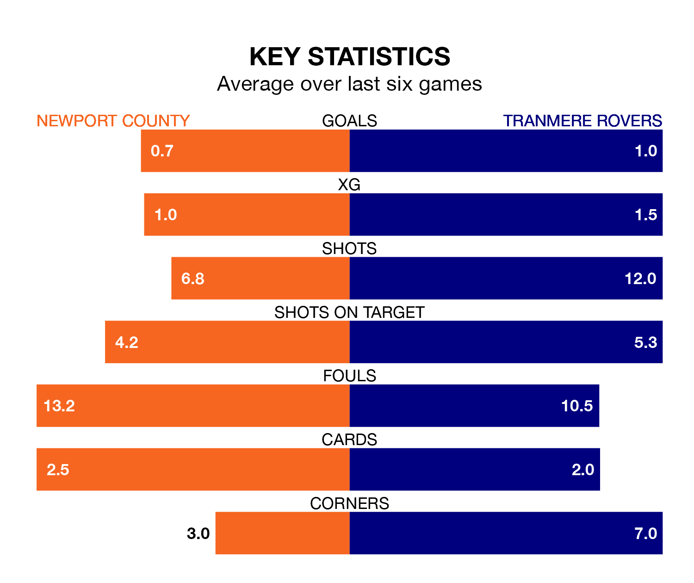

Newport County welcome Tranmere Rovers to Rodney Parade on Saturday looking to pick up points to end their five-game losing streak.
Newport's struggles have left them with just three points from their last six EFL League Two matches, while their opponents have earned seven from a possible 18.
In the last 10 years, Newport and Tranmere have played each other on 10 occasions. Newport won six of them, Tranmere three, and they drew once.
On average, the Exiles scored 1.3 goals and Tranmere 0.8 in those matches.
Their last meeting was on December 9, when Tranmere won 2-1 at home.
In Will Evans, Newport have one of the league's sharpest shooters so far this season. He has notched 20 goals in 43 appearances, to sit fourth in the scoring charts.
His goal rate of one every 178 minutes is quicker than that of Conner Jennings, Tranmere's top scorer with a goal every 330 minutes, and a total of 11 goals in 41 games.
With 60 goals in 43 games so far this season, County are scoring at below the league average rate with 1.4 goals per game. And they are conceding more than average, letting in 69 goals at a rate of 1.6 per game.
Rovers are also below average scorers, with 1.4 goals per game, compared to a league average of 1.5. They have conceded 1.5 goals per game.
The away side are 18th in the table after 43 games, of which they have won 15 and drawn six, earning 51 points.
The Exiles are two places ahead of Tranmere in 16th, with 16 wins and seven draws putting them on 55 points.
Newport's last match was on Tuesday, a 3-1 loss against Accrington Stanley, with Bryn Morris getting the goal for the Exiles.
Tranmere lost 3-1 against Walsall last time out, on April 6, with Regan Hendry on the scoresheet.
Saturday's match will be refereed by Craig Hicks, who has taken charge of six EFL League Two games so far this season, issuing one red card and booking 25 players. He has awarded one penalty.
He is yet to oversee a match featuring either Newport or Tranmere this season.
Updated: 10:01 (UTC), 12/04/24